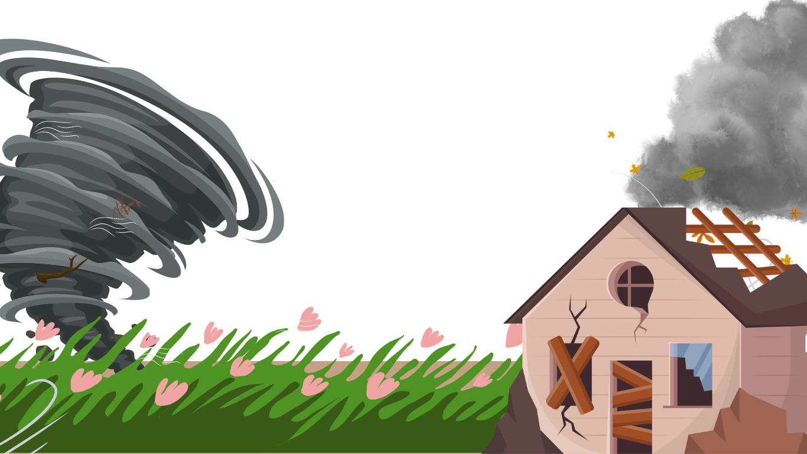

Tornado
Tornado

Recent News
Here, you'll find the latest information on recent tornado, including their impacts and ongoing response efforts. Stay informed and engaged as we navigate through these critical events together.
LEARN MORE

FAQs
Here, you'll find answers to common inquiries regarding tornado preparedness, response, and recovery. Explore our comprehensive resources to stay informed and empowered in the face of unforeseen challenges.
LEARN MORE

Emergency Kit
Discover essential items and expert tips to assemble a comprehensive kit tailored to your needs. Be ready to face disasters confidently, knowing you have the necessary supplies at hand.
LEARN MORE